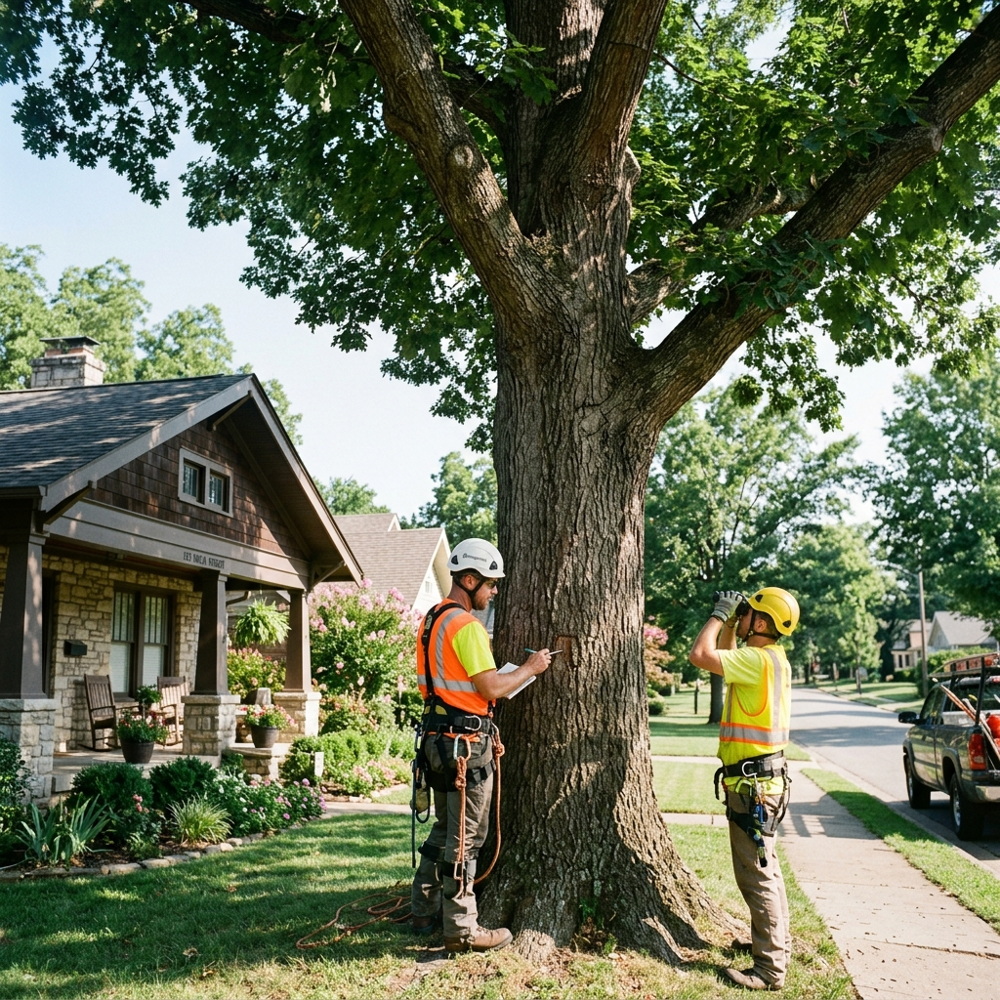

Tree Removal
How Much Does Tree Removal Cost in Jonesboro, Arkansas?
Most residential tree removals in Jonesboro range from $300 to $2,500. Learn what drives pricing, when crane-assisted removal is needed, and how to get an accurate written estimate.
Read Article →